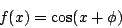
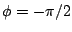
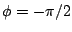
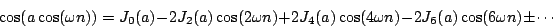
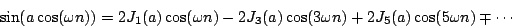
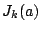
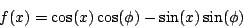
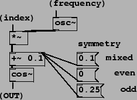

Next: Phase modulation and FM
Up: Examples
Previous: Waveshaping using an exponential
Contents
Index
Another interesting class of waveshaping transfer functions is the sinusoids:

which include the cosine and sine functions (got by choosing  and
, respectively). These functions, one being even and the
other odd, give rise to even and odd harmonic spectra, which turn out to be:
and
, respectively). These functions, one being even and the
other odd, give rise to even and odd harmonic spectra, which turn out to be:


The functions  are the
Bessel functions
of the first kind, which
engineers sometimes use to solve problems about vibrations or heat flow on
discs. For other values of  , we can expand the expression for
, we can expand the expression for  :
:

so the result is a mix between the even and the odd harmonics, with
controlling the relative amplitudes of the two. This is demonstrated in Patch
E07.evenodd.pd, shown in Figure 5.14.
Figure 5.14:
Using an additive offset to a cosine transfer function to alter the
symmetry between even and odd. With no offset the symmetry is even. For odd symmetry, a quarter cycle is added
to the phase. Smaller offsets give a mixture of even and odd.
|  |
Next: Phase modulation and FM
Up: Examples
Previous: Waveshaping using an exponential
Contents
Index
Miller Puckette
2006-12-30